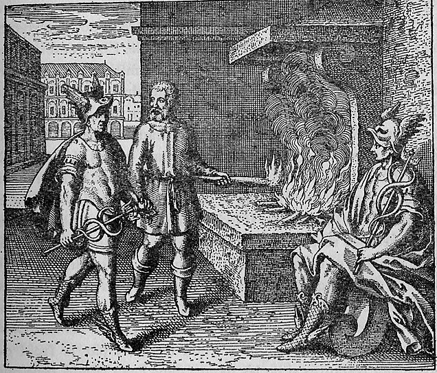

Two fires burn in separate vessels or furnaces, with a figure tending them or directing material between them. Mercury — possibly depicted as a caduceus-bearing figure or as liquid quicksilver — appears in duplicate, being passed from one vessel to another. The composition emphasizes doubling and correspondence: fire feeds fire, mercury feeds mercury, in a self-reinforcing cycle.
Give fire to fire, Mercury to Mercury, and that is enough for you.
Maier develops the principle that like produces like: fire must be added to fire, and mercury to mercury, for the philosophical work to succeed. He argues against the common error of mixing incompatible substances, insisting that the alchemist must recognize the common nature hidden beneath different appearances. The discourse draws on the allegory of Saturn devouring his children, which Maier interprets as the dissolution of metals back into their mercurial prima materia. He cites the Turba Philosophorum's dictum that the Stone is nourished only by its own kind, establishing the principle of philosophical homogeneity that governs the entire citrinitas stage.
Emblem X bears the motto: "Give fire to fire, Mercury to Mercury, and that is enough for you."
Maier develops the principle that like produces like: fire must be added to fire, and mercury to mercury, for the philosophical work to succeed. He argues against the common error of mixing incompatible substances, insisting that the alchemist must recognize the common nature hidden beneath different appearances. The discourse draws on the allegory of Saturn devouring his children, which Maier interprets as the dissolution of metals back into their mercurial prima materia.
De Jong's source-critical analysis identifies the textual traditions Maier draws upon for this emblem.
The discourse draws on alchemical sources: Aurora Consurgens, Turba Philosophorum.
Hereward Tilton: Tilton discusses discourse 10's reference to the aqua foetida — the powerful spirit with the smell of sulphur and the grave — identified as the quintessence from Parnassus's fountain struck by Pegasus. This connects to Maier's Rosicrucian allegorical reading of the Fama Fraternitatis.
Walter Pagel: Pagel discusses Maier's Empedoclean cosmology in the discourse to Emblem X: air and earth as secondary elements arising from the conjunction of primary elements water (mercury) and fire (sulphur), the union of opposites.
H.M.E. de Jong: Source: Hesiod, Tkeogoazy,1,497: “Hpc'Errov 3’ éifiueocrshifiov, rc15p.cvrov xwrornzivcovrev név Zeb; o‘1.‘i1p!. EE, aocrdcxfiovoq s I5puo3€i'!]c; lluflofév 1?n'oc3e':', q Tuatloiqfine‘: llocpvnooioo"r'}y.' Euevéfiorcicrcn Bafipa Bvvrroiat [3po'ro'Eo'r..""First, however, hespit out the st one whichhehaddevouredlast. 5Am. de Villanova, Nozmm Lumen, chapter IV, in: Art. A:m'f., II, 5031505- ”Art.
Figure: Kronos / Saturn (Saturnus)
Tilton discusses discourse 10's reference to the aqua foetida — the powerful spirit with the smell of sulphur and the grave — identified as the quintessence from Parnassus's fountain struck by Pegasus. This connects to Maier's Rosicrucian allegorical reading of the Fama Fraternitatis.
Citation: Ch. IV, pp. 170-171
Pagel discusses Maier's Empedoclean cosmology in the discourse to Emblem X: air and earth as secondary elements arising from the conjunction of primary elements water (mercury) and fire (sulphur), the union of opposites.
Citation: p. 102
Source: Hesiod, Tkeogoazy,1,497: “Hpc'Errov 3’ éifiueocrshifiov, rc15p.cvrov xwrornzivcovrev név Zeb; o‘1.‘i1p!. EE, aocrdcxfiovoq s I5puo3€i'!]c; lluflofév 1?n'oc3e':', q Tuatloiqfine‘: llocpvnooioo"r'}y.' Euevéfiorcicrcn Bafipa Bvvrroiat [3po'ro'Eo'r..""First, however, hespit out the st one whichhehaddevouredlast. 5Am. de Villanova, Nozmm Lumen, chapter IV, in: Art. A:m'f., II, 5031505- ”Art. Am'if., II, 505."Turbo Philasopizormn, in: Art. Aur£f., I,62.5Turbo Philosophormrz, in:Ant: Aztrifi, I, 64. I2 | In thediscourse Maiercites anumberofalchemical statementsinorderto elucidate the meaningof t his emblem. In thebeginningof thediscourse hementions that innon-alchemical conceptions Saturnis considered asasymbol of Time, which devoursitsown products. Furt her Maierissupported by the Twbzz ...